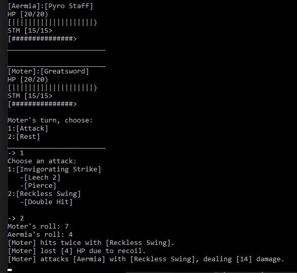
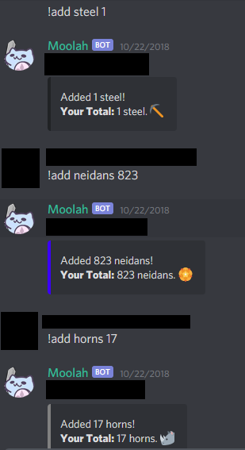

When I was in high school, I played a Facebook game that was a turn based Role-Playing-Game (RPG) called Marvel Avengers Alliance.
I enjoyed my time in that game and it made myself a fan of turn-based RPGs, so much that it inspired me to make my own game like one.
This project is my first game I have ever made in my free time called BattleGame. It started in the Summer of 2016.
It is coded entirely in C++, and plays through the command line with user input.
Its gameplay is similar to a turn-based RPG but is entirely through text.
It has different weapons with attacks that are tied to each.
Each enemy you defeat will increase your stats based on their strength.

In Summer of 2018, I was involved in a community or "guild" in the Massive-Multiplyer-Online-Roleplaying-Game (MMORPG) called Black Desert Online.
A friend of mine in the community was talking to me about an issue involving keeping track of the member's contribution from an activity in the game called Sea Monster Hunting.
Both of us came up with the idea of creating a bot for the social chatting program called Discord that can keep track of items gathered through user input commands.
She provided the ideas of what the bot should behave like while I created the bot.
The bot is called Moolah and is coded in Python 3.6. It uses the Discord API to take in user input commands through the Discord chat.
When the user sends the input through the Discord chat, the bot will take that info and send it to a Google Sheet using the Sheets API.
The bot is able to Add/Subtract items, see a member's total contribution represented as a money amount, and give their items to other members.